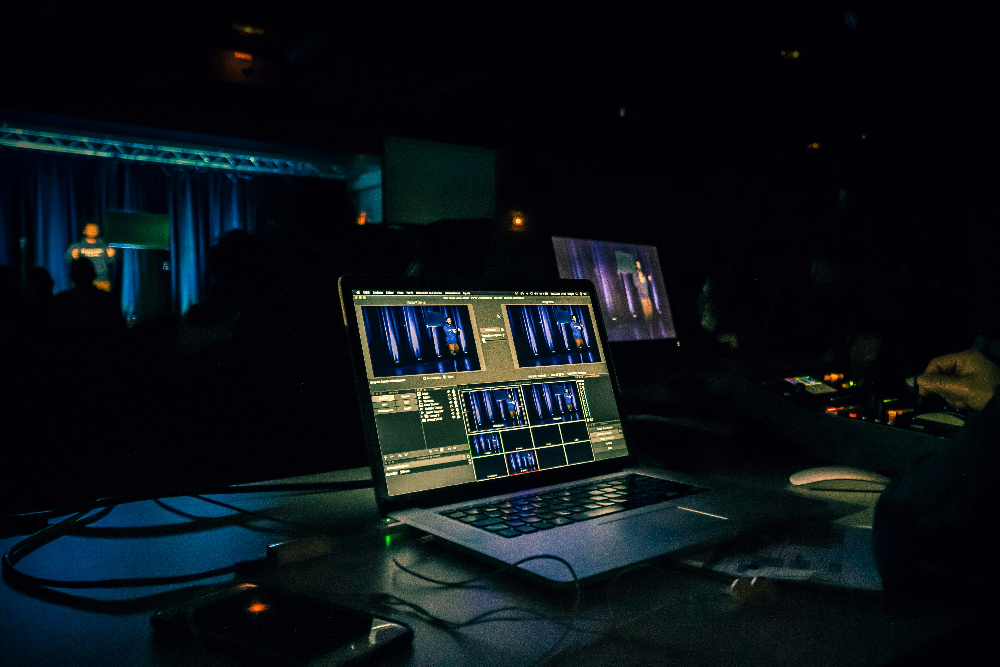
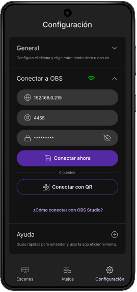
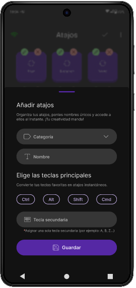
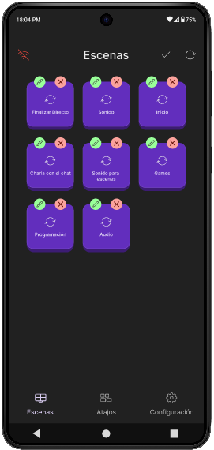
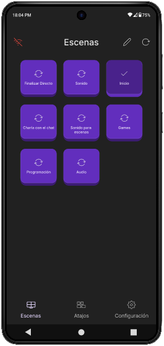
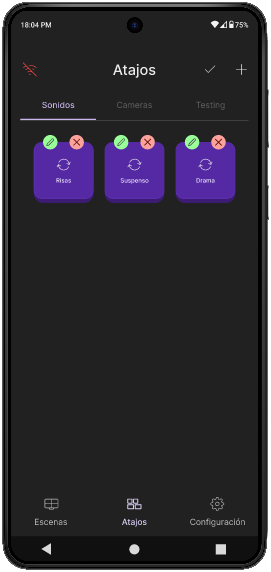
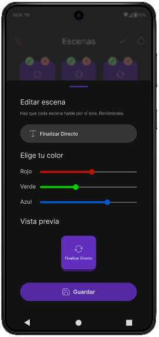
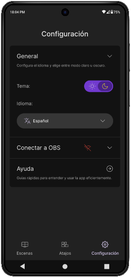

Job to Be Done
Reducir el esfuerzo cognitivo de controlar OBS Studio durante transmisiones en vivo para creadores que producen contenido sin asistencia técnica.
Controla OBS Studio de forma remota y mantén la atención en tu transmisión, sin interrumpir tu flujo de trabajo.
Stream Tap es una aplicación Android publicada en Google Play que permite gestionar escenas y atajos de OBS Studio desde un dispositivo móvil.
Aunque Stream Tap ya se encontraba publicado, este caso de estudio reconstruye el análisis del producto desde una perspectiva de UX y Product Design para identificar el problema que resuelve, analizar las decisiones presentes en la experiencia y proponer oportunidades de evolución fundamentadas en metodologías centradas en el usuario.

El verdadero desafío no era controlar OBS Studio, sino permitir que el streamer mantuviera su atención en la transmisión mientras ejecutaba acciones críticas.
Durante una transmisión en vivo, los creadores de contenido deben cambiar escenas, ejecutar atajos y controlar diferentes funciones de OBS Studio sin interrumpir su interacción con la audiencia.
Cuando estas acciones dependen del teclado o del mouse, el usuario debe desviar constantemente su atención de la transmisión, aumentando el esfuerzo cognitivo y el riesgo de cometer errores durante momentos críticos.
Stream Tap surge para facilitar este proceso mediante un centro de control móvil que permite ejecutar acciones de OBS Studio de forma remota, manteniendo el foco en la transmisión.
Antes de proponer cualquier oportunidad de mejora, fue necesario comprender qué necesidad buscaba resolver Stream Tap y desde qué contexto operativo la experimentaba el usuario.
El JTBD definió la necesidad funcional del producto, mientras que el Point of View permitió comprender el contexto operativo y emocional del usuario. A partir de esta comprensión se inició la investigación para identificar los principales factores que influían en la experiencia durante una transmisión en vivo.
Reducir el esfuerzo cognitivo de controlar OBS Studio durante transmisiones en vivo para creadores que producen contenido sin asistencia técnica.
@Kathe CC necesita gestionar OBS Studio sin desviar su atención de la transmisión, porque cualquier interrupción puede afectar la experiencia de su audiencia y su confianza durante el directo.
Para comprender el contexto de uso de Stream Tap, realicé una investigación documental centrada en experiencias compartidas por streamers y creadores de contenido que utilizan OBS Studio.
El objetivo fue identificar patrones de comportamiento, comprender las principales dificultades durante una transmisión en vivo y fundamentar las decisiones posteriores mediante evidencia cualitativa.
Durante una transmisión en vivo, los streamers necesitan ejecutar acciones sin desviar su atención del contenido ni de la interacción con su audiencia.
InsightCambiar constantemente entre OBS Studio y la transmisión interrumpe el flujo de trabajo y aumenta la carga operativa en momentos donde la rapidez es crítica.
Las acciones utilizadas con mayor frecuencia deben permanecer disponibles en todo momento durante la transmisión.
InsightPriorizar el acceso inmediato a escenas y atajos permite responder rápidamente a situaciones en vivo y reduce el tiempo necesario para ejecutar acciones críticas.
Durante una transmisión, recordar configuraciones, cambiar de contexto o buscar controles incrementa el esfuerzo necesario para operar el software.
InsightLos streamers adoptan herramientas externas no por preferencia tecnológica, sino porque les permiten reducir la carga mental y recuperar la sensación de control durante la transmisión.
Las teclas rápidas no funcionan correctamente.
¿Hay algún truco para usar atajos? El problema
es que estas teclas rápidas solo funcionan cuando
hago clic en la ventana de vista previa de OBS Studio.
Tengo un Stream Deck. Quiero saber cómo programarlo para cambiar elementos o escenas que se están transmitiendo a través de la cámara virtual en otra aplicación, sin salir de la escena activa de Twitch que estoy transmitiendo.
Acceso inmediato a funciones críticasHola, tengo un problema con OBS. Por alguna razón, incluso cuando estoy grabando solo la pantalla o usando la cámara virtual, las escenas se cambian solas después de un rato.
Reducción de la carga cognitivaLos hallazgos obtenidos permitieron comprender las principales necesidades del contexto de uso de Stream Tap. A partir de esta evidencia, se priorizaron las oportunidades con mayor potencial de impacto para orientar el análisis de las siguientes etapas del producto.
A partir de los hallazgos obtenidos durante la investigación, se priorizaron las oportunidades de mejora según su impacto potencial para el usuario y el esfuerzo estimado de implementación.
Este ejercicio permitió identificar qué iniciativas aportarían mayor valor al producto antes de plantear futuras iteraciones.
Las funcionalidades relacionadas con la conexión a OBS Studio, la gestión de escenas y la configuración de atajos fueron priorizadas por su impacto directo en la operación durante una transmisión y por su bajo esfuerzo estimado de implementación.
La posibilidad de personalizar controles y organizar atajos mediante categorías fue considerada una mejora de alto valor para favorecer el reconocimiento visual y adaptar la interfaz a las necesidades de cada streamer.
Características como el reordenamiento mediante Drag & Drop fueron identificadas como mejoras de alto impacto, aunque con un mayor esfuerzo de desarrollo, por lo que representan oportunidades para futuras iteraciones del producto.
La matriz permitió identificar qué funcionalidades aportan mayor valor al usuario según su impacto y esfuerzo estimado. Esta priorización sirvió como punto de partida para analizar con mayor profundidad el flujo actual del producto e identificar las principales oportunidades de mejora.

Con las oportunidades priorizadas, el siguiente paso consistió en analizar el flujo actual de Stream Tap para comprender cómo los usuarios interactúan con el producto e identificar los principales puntos de fricción presentes durante las tareas más importantes.

El usuario debe salir de la app, buscar datos técnicos en OBS Studio, recordarlos o copiarlos y regresar para completar la conexión. Este cambio de contexto incrementa el esfuerzo necesario para iniciar el uso del producto.
KPI relacionadoEl usuario nuevo podría no identificar inmediatamente la función del icono de conexión, por lo que requiere una guía contextual para descubrir la acción.
KPI relacionadoSi la acción principal no aparece inmediatamente en el área visible inicial (above the fold), el usuario puede requerir exploración adicional antes de completar la tarea.
KPI relacionado
El usuario debe decidir cómo nombrar y categorizar sus controles antes de utilizarlos durante una transmisión. Una organización poco representativa puede dificultar su localización posterior.
KPI relacionadoEl usuario debe asociar una acción dentro de Stream Tap con una combinación previamente configurada en OBS Studio.
KPI relacionadoDespués de crear un atajo, el usuario necesita confirmar rápidamente que la acción fue registrada correctamente y estará disponible durante la transmisión.
KPI relacionado
Durante una transmisión, el usuario necesita reconocer rápidamente la escena correcta sin perder atención sobre el contenido y la audiencia. Aunque Stream Tap permite personalizar nombres y colores, la selección sigue dependiendo de una organización previa.
KPI relacionadoCuando el usuario modifica una escena, necesita confirmar que los cambios afectan correctamente la forma en que identificará ese control durante la transmisión.
KPI relacionadoEliminar una escena puede afectar la organización del panel de control, por lo que el usuario podría necesitar una confirmación antes de completar la acción.
KPI relacionadoLa auditoría permitió identificar cómo la organización actual del producto influye en la experiencia del usuario y evidenció oportunidades para comprender mejor su estructura funcional. A partir de este análisis, la siguiente etapa documenta la arquitectura de información del producto y explica cómo está organizada para responder a las necesidades identificadas durante la investigación.
La arquitectura de información de Stream Tap fue analizada y documentada a partir del JTBD, el Desk Research y la auditoría del flujo actual, con el objetivo de explicar cómo la organización del producto contribuye a reducir el esfuerzo cognitivo durante las transmisiones en vivo.
Reducir la baja encontrabilidad del flujo de conexión y facilitar el inicio de la interacción con el producto.
Favorecer el reconocimiento visual sobre la memoria y facilitar la localización de controles.
Mantener una estructura consistente que facilite el aprendizaje y reduzca la complejidad de la interfaz.
Evitar que tareas de uso poco frecuente interfieran con las acciones críticas durante la transmisión.
Disminuir el tiempo necesario para acceder a las funciones utilizadas con mayor frecuencia durante una transmisión.
Los hallazgos obtenidos durante la investigación y la auditoría del flujo actual permiten comprender cómo la organización funcional de Stream Tap responde a las necesidades identificadas durante el análisis. La siguiente relación muestra cómo cada decisión de organización encuentra sustento en la evidencia recopilada.
Esta organización busca reducir el esfuerzo necesario para controlar OBS Studio estructurando las funciones según su frecuencia de uso y el contexto operativo del streamer. Al priorizar las acciones críticas y mantener una jerarquía consistente, se facilita la localización de controles durante las transmisiones en vivo.
El análisis de la arquitectura de información permitió comprender cómo Stream Tap organiza sus funciones para responder a las necesidades del streamer durante una transmisión. A partir de estos hallazgos, el siguiente apartado presenta las principales oportunidades de evolución identificadas durante el análisis, orientadas a fortalecer la experiencia del usuario en futuras iteraciones del producto.
Las siguientes oportunidades no representan un rediseño del producto, sino posibles líneas de evolución identificadas a partir de la investigación, la auditoría del flujo actual y el análisis de la arquitectura de información. Su propósito es mostrar cómo el análisis realizado puede orientar futuras decisiones de producto sin alterar la funcionalidad existente.
El análisis del flujo actual permitió identificar que la conexión con OBS Studio constituye el punto de entrada al producto. Reforzar la jerarquía visual de esta acción facilitaría su reconocimiento durante la primera interacción y reduciría el tiempo necesario para iniciar el flujo principal.

Pantalla actualLas funciones utilizadas con mayor frecuencia durante una transmisión constituyen el núcleo operativo del producto. Reforzar su protagonismo visual facilitaría su reconocimiento y reduciría el tiempo necesario para ejecutar acciones críticas.

Pantalla actualCentralizar las acciones relacionadas con la creación y edición de atajos favorecería una estructura más consistente y reduciría la necesidad de alternar entre distintas opciones durante la configuración.

Pantalla actualLa personalización de nombres, categorías y colores constituye un mecanismo de reconocimiento visual que facilita localizar acciones durante escenarios de alta demanda cognitiva.

Pantalla actualDiferenciar visualmente las tareas de configuración de las acciones utilizadas durante la transmisión contribuiría a reducir la carga visual y mantener el foco en las tareas principales del usuario.
Las oportunidades identificadas no representan un rediseño de Stream Tap, sino posibles líneas de evolución fundamentadas en la investigación, la auditoría del flujo actual y el análisis de la arquitectura de información. Cada una responde a necesidades observadas durante el estudio y plantea cómo el producto podría fortalecerse en futuras iteraciones sin perder el enfoque que actualmente resuelve para los streamers.
Como toda oportunidad de evolución requiere ser validada antes de implementarse, el siguiente apartado define un plan de evaluación basado en el framework HEART para establecer cómo podrían medirse estas propuestas en futuras iteraciones del producto.
Antes de implementar cualquier oportunidad de evolución, es necesario definir cómo evaluar su impacto sobre la experiencia del usuario. Para ello, se estableció un plan de evaluación basado en el framework HEART, seleccionando métricas orientadas a las tareas más críticas que realizan los streamers dentro de Stream Tap.
Este plan no presenta resultados medidos, sino una propuesta de evaluación que serviría como referencia para validar futuras iteraciones del producto.
Debido a que Stream Tap ya se encuentra publicado y este análisis se realizó de manera retrospectiva, el enfoque se centró en Task Success, al ser la dimensión del framework HEART que permite evaluar de forma objetiva la eficiencia y facilidad con la que los usuarios completan las tareas principales del producto durante una transmisión.
Definir criterios de evaluación antes de implementar cambios permite que las futuras decisiones de producto se fundamenten en evidencia y no únicamente en percepciones de diseño. Este plan establece una base para medir objetivamente el impacto de las oportunidades identificadas y orientar la evolución de Stream Tap en futuras iteraciones.
Una vez definidos los criterios de evaluación mediante el framework HEART, el siguiente paso consiste en establecer cómo recopilar la información necesaria para validar las oportunidades identificadas. Para ello se propone una prueba de usabilidad utilizando la metodología Think Aloud, permitiendo observar el comportamiento del usuario mientras ejecuta las tareas principales dentro de Stream Tap.
Validar si las oportunidades de evolución identificadas durante el análisis contribuyen a mejorar la facilidad con la que los usuarios completan las tareas principales de Stream Tap durante una transmisión en vivo.
La prueba estaría dirigida a usuarios con experiencia utilizando OBS Studio para la creación de contenido en vivo. Durante la sesión se les solicitaría completar las tareas principales dentro de Stream Tap mientras verbalizan sus pensamientos, permitiendo observar cómo interactúan con la interfaz durante el flujo de uso.
Verificar si el usuario identifica fácilmente el flujo inicial de conexión.
Observar la rapidez con la que localiza y ejecuta la acción durante una transmisión.
Comprobar si el usuario reconoce correctamente los shortcuts y los utiliza sin cometer errores.
Evaluar la facilidad para configurar una acción personalizada.
Este plan de validación complementa el análisis realizado
al establecer un método para observar el comportamiento
real de los usuarios antes de implementar cambios en el
producto.
De esta manera, las futuras decisiones de diseño
podrían fundamentarse tanto en criterios de evaluación
como en evidencia cualitativa obtenida mediante pruebas
de usabilidad.
Analizar Stream Tap desde una perspectiva de UX y Product Design permitió ir más allá de evaluar una interfaz. El proceso consistió en comprender el problema que resuelve el producto, identificar las decisiones que sustentan su funcionamiento y establecer una base metodológica para orientar su evolución mediante investigación, evaluación y validación.
Antes de recopilar las citas de la comunidad, mis hipótesis sobre las fricciones de Stream Tap partían solo de mi criterio como diseñador. Al incorporar evidencia real de foros de OBS y Reddit, pude confirmar cuáles fricciones realmente vivían los streamers y esto me permitió priorizar las oportunidades de evolución con mayor precisión, en lugar de basarme únicamente en intuición de diseño.
Definir el Job to Be Done y el Point of View antes de auditar el flujo actual cambió el enfoque del análisis: en lugar de evaluar si cada pantalla se veía bien, evalué si cada decisión reducía el esfuerzo cognitivo del streamer durante una transmisión en vivo. Esa base es la que sostiene por qué prioricé ciertas fricciones sobre otras a lo largo de todo el case study.
Definir el framework HEART y una prueba Think Aloud antes de rediseñar cualquier pantalla me obligó a pensar cómo se mediría el éxito de cada oportunidad de evolución, no solo cómo se vería. Dado que Stream Tap ya está publicado y este análisis es retrospectivo, elegí enfocarme en Task Success a propósito, no porque el análisis quedara incompleto.
Este proyecto representó la oportunidad de aplicar, por primera vez de forma metodológica, una perspectiva de UX y Product Design sobre un producto en cuyo desarrollo original participé como diseñador UI, aportando en la jerarquía visual y el sistema de color de la interfaz. Documentar el problema, estructurar la investigación, justificar decisiones y plantear mecanismos de evaluación y validación me permitió consolidar una forma de trabajo basada en evidencia, pensamiento crítico y mejora continua. Más allá del producto, este proceso fortaleció mi capacidad para abordar desafíos de diseño con una visión integral de UX & Product Design.